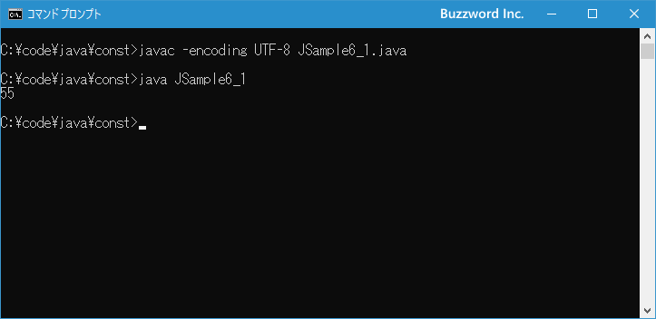

コメントを記述する
プログラムの中に記述したコードに関する説明を残しておきたい場合、コメントを使用します。コメントはプログラムの実行に何の影響も与えませんので、自由に書いておくことができます。 Java では現在コメントの記述方法として 3 種類が用意されています。ここでは Java におけるコメントの記述方法について解説します。
目次
コメントの記述方法
プログラムを記述するときに、この変数は何に使用する変数であるとか、定義したクラスの作成者や作成日などについてメモ書きを残しておきたい時に利用するのがコメントです。コメントは決められたルールに従って記述すれば、プログラムの実行に何の影響も与えることはありません。 Java ではコメントの記述方法として 3 つの方法が用意されていますので順に確認してみます。
単一行コメント
コメントの記述方法の一つ目は // を使った単一行のコメントです。プログラムの中で // が現れた場所から、その行の最後までがコメントになります。
// コメントを記述する
// は行の先頭に記述しその行をコメントの行としてもいいですし、行の途中で記述してその位置より右側をコメントとすることもできます。
int sum = 0; // 10回繰り返す for (int i = 1; i <= 10; i++){ sum = sum + i; // 数値を順に加算する } System.out.println(sum);
上記では赤い文字の部分がコメントとして扱われます。
複数行コメント
コメントの記述方法の二つ目は /* と */ を使った複数行のコメントです。プログラムの中で /* が現れた場所から */ が現れる場所までをコメントとします。
/* コメント記述する */
/* コメント記述する コメント記述する コメント記述する */
/* から */ の間に改行を含めることができるので、複数行に渡るコメントを記述することができます。
int sum = 0;
/*
10 回繰り返す
繰り返すたびに変数 i の値を加算していく
最後に結果を出力する
*/
for (int i = 1; i <= 10; i++){
sum = sum + i;
}
System.out.println(sum);
上記では赤い文字の部分がコメントとして扱われます。
Javadocを利用したドキュメントの作成に使用するコメント
コメントの記述方法の三つ目は Javadoc と呼ばれるツールを使ってプログラムに記述されたコメントからドキュメントを自動的に生成する場合に使用される方法です。基本的な書式は複数行コメントと同じですが /* と */ ではなく /** と */ を使用します。
/** コメント記述する コメント記述する コメント記述する */
クラスの定義やメソッドの定義の直前にこの形式でコメントを記述しておくと、 Javadoc を使用することで自動的にこのクラスに関するドキュメントを生成します。 Javadoc の使いかについては「Javadocの記述」を参照されてください。
それでは簡単なサンプルプログラムを作って試してみます。テキストエディタで次のように記述したあと、 JSample6-1.java という名前で保存します。
/**
* JSample6_1
*
* 2021.02.11
*/
class JSample6_1{
public static void main(String[] args){
int sum = 0;
// 10回繰り返す
for (int i = 1; i <= 10; i++){
sum = sum + i; // 数値を順に加算する
}
/*
集計した結果を画面に出力する
*/
System.out.println(sum);
}
}
コンパイルを行います。
javac -encoding UTF-8 JSample6_1.java
その後で、次のように実行してください。
java JSample6_1

3 つの方法を使ってコメントを記述しました。いずれの方法でコメントを書いてもプログラムの実行には何の影響も与えません。
-- --
Java におけるコメントの記述方法について解説しました。
( Written by Tatsuo Ikura )

著者 / TATSUO IKURA
初心者～中級者の方を対象としたプログラミング方法や開発環境の構築の解説を行うサイトの運営を行っています。